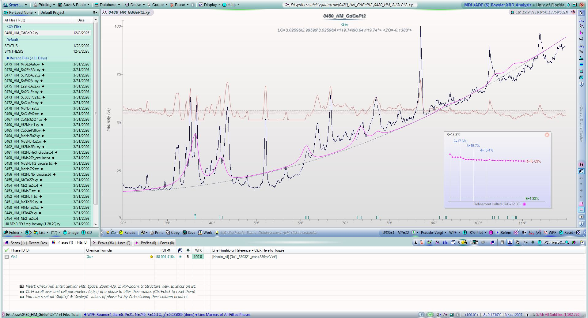
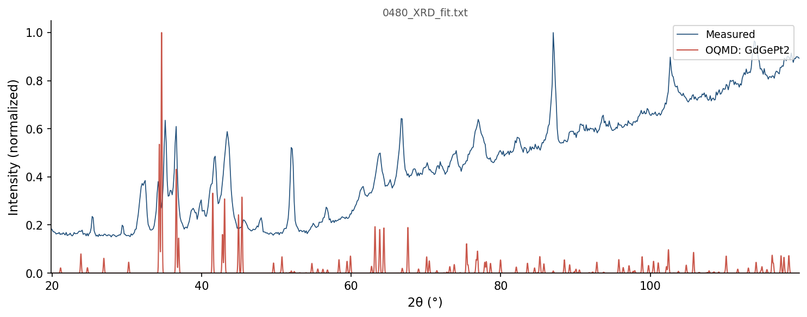

| Element | Expected (mol frac) | Measured (mol frac) | Δ (mol frac) | Δ (%) |
|---|---|---|---|---|
| Gd | 0.2500 | 0.2501 | +0.0001 | +0.01% |
| Ge | 0.2500 | 0.2501 | +0.0001 | +0.01% |
| Pt | 0.5000 | 0.4998 | -0.0002 | -0.02% |
262 entries in the Gd-Ge-Pt element system (25 on hull, 62 ICSD-tagged). Stability in meV/atom. Sorted most stable first.
| Composition | Stability (meV/atom) | ΔE (meV/atom) | ICSD | Space | Entry | CIF |
|---|---|---|---|---|---|---|
Gd1Pt1 |
-141 | -1252.9 | ✓ | Gd-Pt | 30403 | CIF |
Gd1Ge1Pt1 |
-110 | -1126.0 | Gd-Ge-Pt | 1518083 | CIF | |
Gd1Pt3 |
-65 | -979.3 | Gd-Pt | 1973630 | CIF | |
Ge1Pt1 |
-49 | -475.8 | Ge-Pt | 1907874 | CIF | |
Gd1Ge1 |
-46 | -879.0 | ✓ | Gd-Ge | 18848 | CIF |
Gd1Ge2Pt1 |
-42 | -886.4 | Gd-Ge-Pt | 1792602 | CIF | |
Gd1Ge2Pt2 |
-39 | -904.8 | Gd-Ge-Pt | 1786977 | CIF | |
Gd1Pt5 |
-38 | -690.5 | Gd-Pt | 1371249 | CIF | |
Gd3Ge5 |
-33 | -733.3 | Gd-Ge | 1795275 | CIF | |
Gd1Ge1Pt2 |
-32 | -1017.4 | Gd-Ge-Pt | 1365099 | CIF | |
Gd5Ge3 |
-30 | -779.1 | ✓ | Gd-Ge | 8025 | CIF |
Gd2Pt1 |
-25 | -909.4 | ✓ | Gd-Pt | 17334 | CIF |
Ge3Pt2 |
-21 | -417.8 | ✓ | Ge-Pt | 7905 | CIF |
Ge1Pt2 |
-20 | -405.1 | Ge-Pt | 1371420 | CIF | |
Gd4Ge3 |
-20 | -855.8 | Gd-Ge | 1479289 | CIF | |
Ge1Pt3 |
-17 | -321.2 | ✓ | Ge-Pt | 14058 | CIF |
Gd1Pt2 |
-16 | -1098.1 | Gd-Pt | 1594751 | CIF | |
Gd3Pt4 |
-12 | -1198.5 | ✓ | Gd-Pt | 2027075 | CIF |
Gd3Pt1 |
-5 | -687.0 | ✓ | Gd-Pt | 2027074 | CIF |
Gd3Ge4 |
-5 | -800.3 | ✓ | Gd-Ge | 20756 | CIF |
Ge2Pt3 |
-2 | -435.5 | ✓ | Ge-Pt | 32367 | CIF |
Gd1 |
+0 | 0.0 | ✓ | Gd | 9623 | CIF |
Ge1 |
+0 | 0.0 | ✓ | Ge | 2065280 | CIF |
Ge1 |
+0 | 0.0 | ✓ | Ge | 7651 | CIF |
Pt1 |
+0 | 0.0 | ✓ | Pt | 7522 | CIF |
Gd1Ge1Pt1 |
+0 | -1126.0 | ✓ | Gd-Ge-Pt | 2027037 | CIF |
Gd4Ge3 |
+0 | -855.8 | Gd-Ge | 1479321 | CIF | |
Gd1Ge1Pt1 |
+0 | -1125.9 | Gd-Ge-Pt | 1444814 | CIF | |
Ge1Pt3 |
+0 | -320.9 | Ge-Pt | 1794936 | CIF | |
Gd3Pt1 |
+0 | -686.8 | Gd-Pt | 1800900 | CIF | |
Ge1Pt3 |
+0 | -320.9 | ✓ | Ge-Pt | 10310 | CIF |
Ge1 |
+0 | 0.3 | Ge | 1215508 | CIF | |
Pt1 |
+0 | 0.3 | Pt | 1214560 | CIF | |
Gd1Ge2Pt1 |
+0 | -886.0 | ✓ | Gd-Ge-Pt | 2025302 | CIF |
Gd3Pt4 |
+1 | -1197.9 | Gd-Pt | 1801076 | CIF | |
Ge1Pt1 |
+1 | -475.1 | ✓ | Ge-Pt | 2258 | CIF |
Gd1 |
+1 | 0.8 | Gd | 1215418 | CIF | |
Gd1 |
+1 | 1.0 | Gd | 1216041 | CIF | |
Gd1 |
+1 | 1.5 | ✓ | Gd | 9312 | CIF |
Ge1Pt124 |
+1 | -8.8 | Ge-Pt | 2070098 | CIF | |
Gd1Pt3 |
+2 | -977.7 | ✓ | Gd-Pt | 17333 | CIF |
Gd3Ge5 |
+2 | -731.7 | ✓ | Gd-Ge | 26274 | CIF |
Gd1Pt2 |
+2 | -1096.3 | ✓ | Gd-Pt | 19392 | CIF |
Pt1 |
+3 | 2.7 | Pt | 1215718 | CIF | |
Gd5Pt2 |
+4 | -778.6 | Gd-Pt | 1800934 | CIF | |
Pt1 |
+4 | 4.0 | Pt | 1856759 | CIF | |
Ge2Pt3 |
+5 | -431.0 | ✓ | Ge-Pt | 8190 | CIF |
Ge2Pt1 |
+5 | -343.6 | ✓ | Ge-Pt | 8191 | CIF |
Gd1Pt3 |
+8 | -971.4 | Gd-Pt | 344278 | CIF | |
Gd5Ge4 |
+9 | -852.3 | ✓ | Gd-Ge | 15063 | CIF |
Gd7Pt3 |
+10 | -810.7 | Gd-Pt | 1785814 | CIF | |
Gd7Pt3 |
+10 | -810.6 | ✓ | Gd-Pt | 2027073 | CIF |
Ge1 |
+10 | 9.9 | ✓ | Ge | 21252 | CIF |
Gd1 |
+11 | 11.3 | ✓ | Gd | 3925 | CIF |
Gd1 |
+12 | 11.5 | Gd | 1215685 | CIF | |
Gd1 |
+12 | 11.6 | Gd | 1214527 | CIF | |
Gd1 |
+12 | 12.2 | Gd | 1215774 | CIF | |
Gd1Ge2Pt2 |
+13 | -892.2 | Gd-Ge-Pt | 1789166 | CIF | |
Gd1Ge2Pt2 |
+13 | -892.1 | Gd-Ge-Pt | 1368471 | CIF | |
Pt1 |
+13 | 13.0 | ✓ | Pt | 2030154 | CIF |
Gd1 |
+13 | 13.0 | Gd | 1215863 | CIF | |
Gd2Ge2Pt1 |
+13 | -1014.0 | Gd-Ge-Pt | 1895088 | CIF | |
Gd1Ge2Pt2 |
+13 | -891.5 | ✓ | Gd-Ge-Pt | 2027038 | CIF |
Ge2Pt5 |
+16 | -341.5 | Ge-Pt | 1821780 | CIF | |
Gd1 |
+17 | 16.7 | ✓ | Gd | 117572 | CIF |
Gd1 |
+17 | 16.8 | Gd | 1215328 | CIF | |
Gd1 |
+17 | 17.1 | ✓ | Gd | 8139 | CIF |
Gd1 |
+17 | 17.1 | ✓ | Gd | 51887 | CIF |
Gd1 |
+17 | 17.2 | ✓ | Gd | 88553 | CIF |
Ge1 |
+18 | 17.6 | ✓ | Ge | 30437 | CIF |
Gd1 |
+18 | 18.2 | Gd | 1215239 | CIF | |
Gd1 |
+19 | 18.8 | Gd | 1214616 | CIF | |
Gd2Ge5Pt3 |
+21 | -790.3 | Gd-Ge-Pt | 1792816 | CIF | |
Gd1Ge3 |
+21 | -467.5 | Gd-Ge | 1365254 | CIF | |
Ge1 |
+25 | 24.7 | ✓ | Ge | 121914 | CIF |
Gd2Ge5 |
+27 | -531.3 | Gd-Ge | 1793031 | CIF | |
Gd11Ge10 |
+28 | -843.4 | ✓ | Gd-Ge | 2052512 | CIF |
Gd2Pt7 |
+30 | -853.3 | Gd-Pt | 1791783 | CIF | |
Ge3Pt2 |
+30 | -387.5 | Ge-Pt | 1785762 | CIF | |
Ge1Pt2 |
+31 | -374.3 | Ge-Pt | 1340114 | CIF | |
Pt1 |
+32 | 31.6 | Pt | 1215451 | CIF | |
Gd1Ge2 |
+34 | -617.8 | Gd-Ge | 1370101 | CIF | |
Ge1Pt1 |
+35 | -441.1 | Ge-Pt | 1244274 | CIF | |
Gd5Pt3 |
+35 | -959.8 | ✓ | Gd-Pt | 30402 | CIF |
Ge64Pt1 |
+37 | 20.7 | ✓ | Ge-Pt | 2065286 | CIF |
Pt1 |
+43 | 42.5 | Pt | 1216077 | CIF | |
Ge64Pt1 |
+43 | 27.2 | ✓ | Ge-Pt | 2065288 | CIF |
Gd3Ge2 |
+44 | -771.0 | Gd-Ge | 1965624 | CIF | |
Gd3Ge7 |
+44 | -542.6 | Gd-Ge | 1453989 | CIF | |
Gd1Ge2 |
+46 | -605.8 | ✓ | Gd-Ge | 77112 | CIF |
Ge2Pt5 |
+48 | -309.2 | Ge-Pt | 1929600 | CIF | |
Pt1 |
+48 | 48.2 | Pt | 1214649 | CIF | |
Gd3Ge5 |
+48 | -685.1 | Gd-Ge | 1799761 | CIF | |
Ge1Pt2 |
+50 | -355.2 | ✓ | Ge-Pt | 13687 | CIF |
Gd1Pt3 |
+52 | -926.8 | Gd-Pt | 1787051 | CIF | |
Gd3Ge13Pt4 |
+54 | -530.4 | ✓ | Gd-Ge-Pt | 2047029 | CIF |
Gd1Ge2Pt1 |
+54 | -832.4 | Gd-Ge-Pt | 1478732 | CIF | |
Ge1Pt2 |
+56 | -348.8 | Ge-Pt | 1520585 | CIF | |
Pt1 |
+57 | 57.0 | ✓ | Pt | 2032578 | CIF |
Gd1Ge1Pt1 |
+57 | -1068.8 | Gd-Ge-Pt | 1447818 | CIF | |
Gd1Ge1Pt1 |
+57 | -1068.8 | Gd-Ge-Pt | 1447088 | CIF | |
Ge1 |
+58 | 58.3 | ✓ | Ge | 2049728 | CIF |
Pt1 |
+60 | 59.9 | Pt | 1215361 | CIF | |
Gd1Ge1Pt1 |
+60 | -1065.6 | Gd-Ge-Pt | 1448555 | CIF | |
Gd1Pt7 |
+61 | -456.5 | Gd-Pt | 1951179 | CIF | |
Gd2Ge1 |
+72 | -620.7 | Gd-Ge | 1521152 | CIF | |
Gd1Ge1Pt1 |
+72 | -1053.7 | Gd-Ge-Pt | 1445534 | CIF | |
Pt1 |
+73 | 72.6 | Pt | 1215272 | CIF | |
Gd2Ge1 |
+81 | -611.5 | Gd-Ge | 1520538 | CIF | |
Gd1Pt1 |
+82 | -1170.7 | Gd-Pt | 305047 | CIF | |
Ge1Pt3 |
+83 | -238.4 | Ge-Pt | 345099 | CIF | |
Ge1Pt3 |
+83 | -238.3 | Ge-Pt | 1956472 | CIF | |
Gd1Ge3 |
+85 | -403.9 | Gd-Ge | 343852 | CIF | |
Ge1 |
+86 | 85.5 | ✓ | Ge | 2032924 | CIF |
Gd1Pt1 |
+86 | -1167.4 | ✓ | Gd-Pt | 667044 | CIF |
Gd1Ge2Pt2 |
+86 | -818.5 | ✓ | Gd-Ge-Pt | 647240 | CIF |
Gd1Pt3 |
+91 | -888.2 | Gd-Pt | 1782376 | CIF | |
Gd1Ge1Pt1 |
+93 | -1032.6 | Gd-Ge-Pt | 1446328 | CIF | |
Gd1Ge5 |
+94 | -231.4 | ✓ | Gd-Ge | 31366 | CIF |
Pt1 |
+95 | 94.8 | ✓ | Pt | 2032577 | CIF |
Pt1 |
+96 | 96.3 | Pt | 1215183 | CIF | |
Gd1Ge2 |
+100 | -551.9 | ✓ | Gd-Ge | 2027033 | CIF |
Ge1Pt15 |
+100 | 19.9 | Ge-Pt | 2072287 | CIF | |
Ge1Pt9 |
+103 | -25.9 | Ge-Pt | 2069292 | CIF | |
Ge1Pt10 |
+105 | -12.3 | Ge-Pt | 2069312 | CIF | |
Gd1Ge3Pt1 |
+108 | -600.6 | Gd-Ge-Pt | 1796061 | CIF | |
Ge1Pt15 |
+110 | 30.1 | Ge-Pt | 2062279 | CIF | |
Ge1Pt15 |
+111 | 30.6 | Ge-Pt | 2066601 | CIF | |
Gd1Ge3 |
+113 | -375.4 | Gd-Ge | 319366 | CIF | |
Pt1 |
+114 | 114.4 | Pt | 2066489 | CIF | |
Ge1Pt15 |
+119 | 38.2 | Ge-Pt | 2062331 | CIF | |
Gd1Ge5 |
+119 | -206.6 | Gd-Ge | 1794746 | CIF | |
Ge1Pt9 |
+120 | -8.4 | Ge-Pt | 2069282 | CIF | |
Gd1Ge1Pt2 |
+123 | -894.5 | Gd-Ge-Pt | 1646853 | CIF | |
Ge7Pt3 |
+125 | -188.4 | Ge-Pt | 1798522 | CIF | |
Ge1Pt17 |
+126 | 54.4 | Ge-Pt | 2062600 | CIF | |
Ge1Pt8 |
+126 | -16.7 | Ge-Pt | 2070037 | CIF | |
Ge1Pt15 |
+126 | 46.1 | Ge-Pt | 2062292 | CIF | |
Ge1Pt7 |
+128 | -32.9 | Ge-Pt | 2072158 | CIF | |
Pt1 |
+132 | 131.9 | Pt | 2069388 | CIF | |
Pt1 |
+133 | 133.2 | Pt | 1215094 | CIF | |
Ge1Pt17 |
+134 | 62.6 | Ge-Pt | 2062614 | CIF | |
Pt1 |
+136 | 135.9 | Pt | 2066507 | CIF | |
Gd3Ge1Pt4 |
+139 | -1013.5 | Gd-Ge-Pt | 1646833 | CIF | |
Ge1 |
+143 | 142.8 | ✓ | Ge | 22044 | CIF |
Gd1Pt1 |
+145 | -1107.8 | Gd-Pt | 1104233 | CIF | |
Ge1 |
+146 | 145.7 | ✓ | Ge | 3485 | CIF |
Gd1 |
+146 | 146.0 | Gd | 1522004 | CIF | |
Gd1 |
+146 | 146.0 | Gd | 1522007 | CIF | |
Gd1 |
+146 | 146.1 | ✓ | Gd | 17319 | CIF |
Gd1 |
+146 | 146.1 | Gd | 1215150 | CIF | |
Pt1 |
+146 | 146.3 | Pt | 1214827 | CIF | |
Gd2Ge1 |
+147 | -545.4 | Gd-Ge | 1416017 | CIF | |
Gd1Ge3 |
+147 | -341.6 | Gd-Ge | 301581 | CIF | |
Pt1 |
+148 | 147.5 | ✓ | Pt | 2031504 | CIF |
Ge1Pt7 |
+149 | -12.0 | Ge-Pt | 2069467 | CIF | |
Gd1Pt1 |
+150 | -1103.0 | Gd-Pt | 1234962 | CIF | |
Ge1 |
+150 | 150.4 | ✓ | Ge | 23201 | CIF |
Ge2Pt1 |
+155 | -193.6 | Ge-Pt | 1520582 | CIF | |
Pt1 |
+159 | 159.2 | Pt | 2069386 | CIF | |
Gd2Ge1Pt1 |
+160 | -906.1 | Gd-Ge-Pt | 549004 | CIF | |
Gd1Pt3 |
+164 | -815.6 | Gd-Pt | 300478 | CIF | |
Gd1Ge3Pt4 |
+164 | -582.2 | Gd-Ge-Pt | 1646855 | CIF | |
Pt1 |
+165 | 165.5 | Pt | 2066498 | CIF | |
Pt1 |
+173 | 173.0 | Pt | 1214916 | CIF | |
Gd1 |
+178 | 177.8 | Gd | 1214883 | CIF | |
Gd3Ge1 |
+186 | -333.7 | Gd-Ge | 347151 | CIF | |
Pt1 |
+186 | 185.9 | Pt | 2054436 | CIF | |
Pt1 |
+189 | 188.7 | Pt | 2069384 | CIF | |
Gd1 |
+191 | 190.8 | Gd | 1214705 | CIF | |
Gd1 |
+191 | 191.1 | Gd | 1215061 | CIF | |
Ge1Pt3 |
+193 | -128.0 | Ge-Pt | 320613 | CIF | |
Ge2Pt3 |
+194 | -241.9 | Ge-Pt | 1964033 | CIF | |
Gd1Ge1Pt2 |
+194 | -823.7 | Gd-Ge-Pt | 1646854 | CIF | |
Gd1 |
+197 | 197.1 | Gd | 1214794 | CIF | |
Gd3Ge1 |
+208 | -311.1 | Gd-Ge | 322665 | CIF | |
Gd1Ge1 |
+212 | -667.0 | Gd-Ge | 1104025 | CIF | |
Ge1Pt3 |
+217 | -104.5 | Ge-Pt | 298540 | CIF | |
Gd1Ge1 |
+218 | -661.0 | Gd-Ge | 1234957 | CIF | |
Gd1Ge1Pt2 |
+221 | -796.8 | Gd-Ge-Pt | 1646842 | CIF | |
Gd3Ge1 |
+222 | -297.2 | Gd-Ge | 298289 | CIF | |
Ge1Pt3 |
+228 | -93.2 | Ge-Pt | 309078 | CIF | |
Gd1Ge1Pt1 |
+232 | -894.3 | Gd-Ge-Pt | 566437 | CIF | |
Ge1 |
+233 | 233.0 | Ge | 1215597 | CIF | |
Ge1 |
+233 | 233.1 | ✓ | Ge | 690322 | CIF |
Ge2Pt9 |
+237 | 3.2 | Ge-Pt | 2069302 | CIF | |
Ge1 |
+248 | 248.2 | Ge | 1215864 | CIF | |
Ge1 |
+249 | 248.6 | Ge | 1215240 | CIF | |
Ge1 |
+249 | 248.7 | Ge | 1215775 | CIF | |
Ge1 |
+254 | 253.5 | Ge | 1472732 | CIF | |
Pt1 |
+256 | 256.3 | Pt | 1280329 | CIF | |
Pt1 |
+257 | 256.6 | Pt | 1215005 | CIF | |
Ge1Pt1 |
+259 | -216.7 | Ge-Pt | 1229662 | CIF | |
Gd1 |
+262 | 261.8 | Gd | 1214972 | CIF | |
Ge1Pt1 |
+263 | -212.8 | Ge-Pt | 1104650 | CIF | |
Gd1Pt1 |
+267 | -986.3 | Gd-Pt | 1229605 | CIF | |
Ge1Pt1 |
+269 | -206.8 | Ge-Pt | 1222691 | CIF | |
Pt1 |
+271 | 271.0 | Pt | 1520244 | CIF | |
Ge1 |
+277 | 276.6 | Ge | 1214706 | CIF | |
Gd3Pt1 |
+282 | -404.9 | Gd-Pt | 321562 | CIF | |
Gd1Pt1 |
+283 | -969.7 | Gd-Pt | 336589 | CIF | |
Gd1Ge1Pt2 |
+288 | -729.1 | Gd-Ge-Pt | 363511 | CIF | |
Ge2Pt7 |
+289 | 3.3 | Ge-Pt | 2070034 | CIF | |
Gd1Ge1 |
+292 | -586.8 | Gd-Ge | 304839 | CIF | |
Ge1Pt1 |
+293 | -183.1 | Ge-Pt | 326549 | CIF | |
Gd1Ge1 |
+296 | -582.7 | Gd-Ge | 336381 | CIF | |
Ge1 |
+300 | 300.5 | ✓ | Ge | 23200 | CIF |
Pt1 |
+301 | 300.6 | Pt | 1215629 | CIF | |
Gd1Ge2 |
+310 | -341.4 | Gd-Ge | 1591434 | CIF | |
Ge1 |
+316 | 315.6 | Ge | 1214795 | CIF | |
Ge1 |
+317 | 317.2 | ✓ | Ge | 16307 | CIF |
Ge1Pt1 |
+321 | -154.9 | Ge-Pt | 1244273 | CIF | |
Ge1 |
+322 | 321.9 | Ge | 1215062 | CIF | |
Gd1Pt3 |
+324 | -655.6 | Gd-Pt | 311020 | CIF | |
Ge1 |
+333 | 332.8 | Ge | 1215329 | CIF | |
Gd3Pt1 |
+334 | -353.2 | Gd-Pt | 346048 | CIF | |
Ge1 |
+334 | 334.2 | ✓ | Ge | 687495 | CIF |
Ge1 |
+334 | 334.4 | Ge | 1215686 | CIF | |
Ge1 |
+336 | 335.6 | Ge | 1214528 | CIF | |
Ge1 |
+336 | 335.7 | ✓ | Ge | 690321 | CIF |
Ge1 |
+336 | 336.1 | Ge | 1214617 | CIF | |
Ge1 |
+341 | 341.0 | Ge | 1215419 | CIF | |
Ge1 |
+343 | 343.3 | Ge | 1521888 | CIF | |
Ge1 |
+343 | 343.3 | Ge | 1521892 | CIF | |
Ge1 |
+344 | 343.5 | ✓ | Ge | 22272 | CIF |
Ge1Pt1 |
+344 | -132.0 | Ge-Pt | 305465 | CIF | |
Ge1 |
+344 | 344.1 | Ge | 1215151 | CIF | |
Ge1Pt1 |
+348 | -128.1 | Ge-Pt | 337007 | CIF | |
Ge3Pt1 |
+348 | 87.0 | Ge-Pt | 299529 | CIF | |
Ge3Pt1 |
+354 | 92.4 | Ge-Pt | 319620 | CIF | |
Gd3Pt1 |
+355 | -332.1 | Gd-Pt | 298712 | CIF | |
Ge3Pt1 |
+364 | 103.2 | Ge-Pt | 310071 | CIF | |
Ge1 |
+368 | 367.6 | Ge | 1214884 | CIF | |
Ge1 |
+384 | 384.0 | Ge | 1214973 | CIF | |
Ge1 |
+385 | 384.7 | Ge | 1280387 | CIF | |
Ge3Pt1 |
+387 | 125.5 | Ge-Pt | 344106 | CIF | |
Gd1Ge3 |
+395 | -93.6 | Gd-Ge | 312123 | CIF | |
Gd3Ge1 |
+411 | -108.2 | Gd-Ge | 308824 | CIF | |
Gd1Ge1 |
+427 | -452.4 | Gd-Ge | 1229576 | CIF | |
Gd3Pt1 |
+435 | -252.5 | Gd-Pt | 309250 | CIF | |
Gd1 |
+441 | 440.6 | Gd | 1215596 | CIF | |
Gd1Ge1Pt1 |
+442 | -684.1 | Gd-Ge-Pt | 867323 | CIF | |
Gd1Ge2Pt1 |
+445 | -441.8 | Gd-Ge-Pt | 419890 | CIF | |
Pt1 |
+463 | 462.8 | Pt | 1215896 | CIF | |
Ge1Pt2 |
+465 | 59.8 | Ge-Pt | 1594722 | CIF | |
Pt1 |
+469 | 468.9 | Pt | 1215807 | CIF | |
Pt1 |
+475 | 474.6 | Pt | 1214738 | CIF | |
Gd1Ge1Pt1 |
+507 | -619.1 | Gd-Ge-Pt | 1455156 | CIF | |
Gd1Ge1Pt1 |
+525 | -600.5 | Gd-Ge-Pt | 1455998 | CIF | |
Ge1 |
+587 | 586.6 | Ge | 1215953 | CIF | |
Gd1Pt1 |
+766 | -486.9 | Gd-Pt | 1222634 | CIF | |
Ge2Pt1 |
+781 | 433.0 | Ge-Pt | 1591448 | CIF | |
Gd1Ge1Pt1 |
+838 | -287.7 | Gd-Ge-Pt | 980102 | CIF | |
Gd1 |
+844 | 843.7 | Gd | 1215952 | CIF | |
Gd1Ge1 |
+968 | 89.2 | Gd-Ge | 1222605 | CIF | |
Gd2Ge1 |
+975 | 282.6 | Gd-Ge | 1593671 | CIF | |
Pt1 |
+1077 | 1077.0 | Pt | 1215540 | CIF | |
Gd2Pt1 |
+1226 | 316.2 | Gd-Pt | 1593713 | CIF | |
Gd2Ge1 |
+1685 | 992.2 | Gd-Ge | 1239741 | CIF | |
Ge1Pt2 |
+1823 | 1418.0 | Ge-Pt | 1237506 | CIF | |
Gd1 |
+1855 | 1854.5 | Gd | 1215507 | CIF | |
Pt1 |
+2828 | 2828.0 | Pt | 1215985 | CIF |

| Phase | Formula | Crystal System | Space Group | Lattice Parameters (Å / °) | Bragg-R |
|---|---|---|---|---|---|
| Ge1 | Ge1 | Triclinic | P1 (1) | — | 16.10% |

16 known superconductor(s) in the GdGePt2 element system. Sorted by Tc descending. ■ closest composition
| Compound | Formula | Tc (K) | Reference |
|---|---|---|---|
| Ge | Ge1 |
5.50 | Search |
| Ge | Ge1 |
5.35 | Search |
| Ge | Ge1 |
5.35 | Search |
| Ge1 | Ge1 |
5.35 | Search |
| Ge-II | Ge1 |
4.94 | 10.1103/PhysRevLett.102.237001 |
| Ge0.5Pt0.5 | Ge0.5Pt0.5 |
1.40 | Search |
| Ge1Pt1 | Ge1Pt1 |
0.40 | Search |
| Ge1Pt1 | Ge1Pt1 |
0.40 | Search |
| Pt | Pt1 |
0.02 | Search |
| Pt | Pt1 |
0.00 | 10.1103/PhysRevB.62.14350 |
| Pt | Pt1 |
0.00 | Search |
| Pt | Pt1 |
0.00 | Search |
| Pt | Pt1 |
0.00 | 10.1103/PhysRevLett.82.4528 |
| Pt | Pt1 |
0.00 | 10.1103/PhysRevB.62.14350 |
| Pt | Pt1 |
0.00 | 10.1103/PhysRevLett.82.4528 |
| Pt | Pt1 |
0.00 | 10.1103/PhysRevLett.82.4528 |